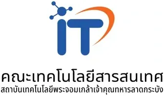
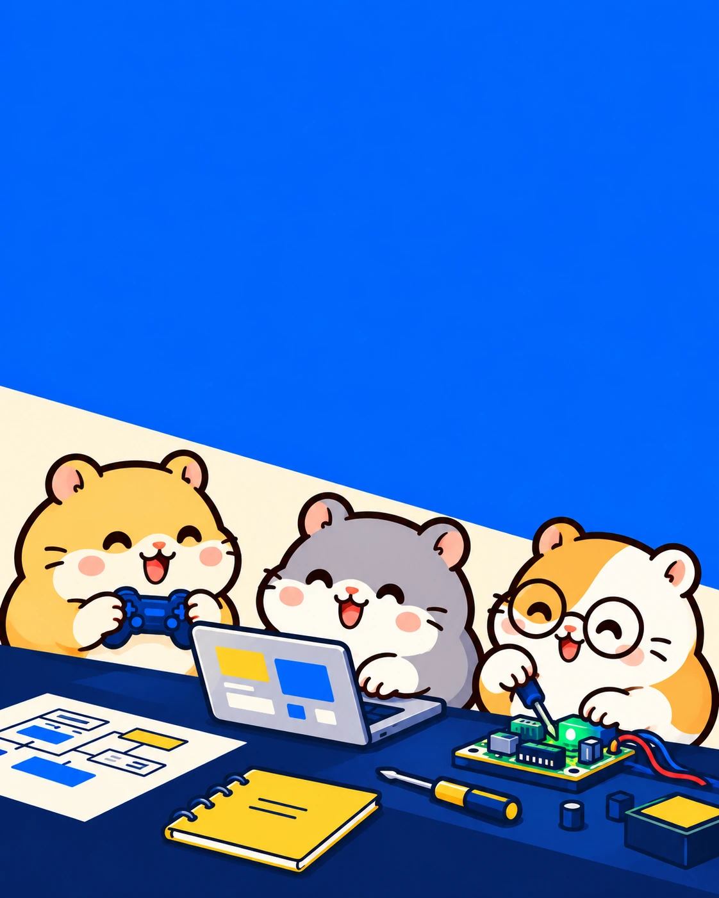
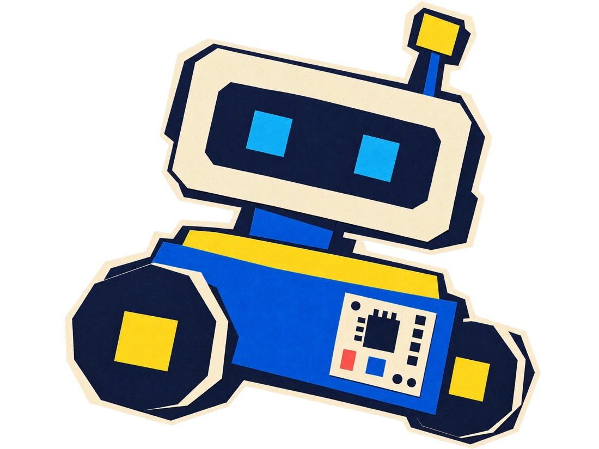

Game
ผลงานที่ส่งเกมที่เล่นได้จริง 1 เกม
 HAMSTER
HAMSTER
สร้างเกม เว็บ/แอป หรือ IoT ใน 72 ชั่วโมง
แล้วพาผลงานไปลุ้นรอบชิงที่ สจล.
เปิดรับสมัคร 28 ก.ย. – 21 ต.ค. 2569

สำหรับนักเรียนมัธยมทั่วประเทศ
เพื่อน ชวนคุณเข้าทีม
สร้างผลงานจริง · ฝึกทำงานเป็นทีม · นำเสนอต่อกรรมการ
รู้จักสนามนี้ ก่อนลงมือสร้าง
ทีม 2–3 คน · สมัครเดี่ยวแล้วหาทีมในกิจกรรมได้
รับโจทย์ 22 ต.ค. แล้วสร้าง ทดสอบ และนำเสนอผลงานผ่าน Discord
นำผลทดสอบมาปรับปรุงผลงานให้พร้อมนำเสนอ
ทีมที่ผ่านคัดเลือก สาธิตและนำเสนอผลงานต่อกรรมการ ณ สจล.
รอบคัดเลือกออนไลน์ผ่าน Discord Hamster Hub
ผลงานที่ส่งเกมที่เล่นได้จริง 1 เกม
ผลงานที่ส่งแอปหรือเว็บไซต์ที่ใช้งานได้จริง 1 ชิ้น

ผลงานที่ส่งแนวคิดและ Proof of Concept ของ IoT หรือนวัตกรรม
ทุกคนที่แข่งได้แน่นอน
ใส่ Portfolio ได้เลย
ต่อหน้ากรรมการ
ฝึกแก้ปัญหากับเพื่อน
จากความคิด สู่ผลงานที่จับต้องได้
1 ทีม · 1 สาย · 1 ผลงาน
ข้ามโรงเรียนได้ · ข้ามชั้นได้ · ม.ต้น + ม.ปลาย ทีมเดียวกันได้
ส่งลิงก์หน้านี้ให้เพื่อนได้เลย
ใช้สร้างคำชวนเพื่อน ยังไม่ใช่การสมัครแข่งขัน
สมัครคนเดียวได้ แล้วมาหาเพื่อนร่วมทีมในกิจกรรม ทีมงานช่วยจับคู่ให้ครบทีม 2–3 คน
สมัครคนเดียวยังไม่มีทีมเลย สมัครได้ไหม?
สมัครเดี่ยวได้ แล้วมาหาเพื่อนร่วมทีมในกิจกรรม หรือรวมทีม 2–3 คนมาสมัครด้วยกันได้
เล่าแนวคิด บทบาทของตัวเอง และผลทดสอบจากงานที่ลงมือทำ
Hamster Hub
ประกาศกิจกรรมที่ผู้จัดส่งให้ CAMPHUB ระบุโอกาสได้รับการพิจารณาให้สิทธิ์สัมภาษณ์รอบ Portfolio สาขาวิศวกรรมระบบไอโอทีและสารสนเทศ คณะวิศวกรรมศาสตร์ สจล. สำหรับผู้ผ่านการแข่งขันออนไลน์และเข้าแข่งขันรอบออนไซต์ การได้รับสิทธิ์ขึ้นอยู่กับคุณสมบัติและเงื่อนไขของผู้จัดและหลักสูตร ไม่ใช่สิทธิ์รับเข้าศึกษาโดยอัตโนมัติ อ่านประกาศกิจกรรม ↗
นำผลงาน กระบวนการพัฒนา และผลทดสอบไปเล่าต่อใน Portfolio ได้ โดยอธิบายบทบาทของตัวเองให้ชัดเจน ผลงานไม่ได้รับประกันผลการสมัครมหาวิทยาลัย นอกจากนี้ Hamster Hub มีแผนให้คำแนะนำหลังแข่งประมาณ 1 เดือน รายละเอียดการเข้าร่วมรอยืนยัน
ตรวจคุณสมบัติ เงื่อนไขทีม การชำระเงิน และการคืนเงินที่หน้าสมัครทางการ หากมีข้อสงสัยให้ติดต่อ Hamster Hub โดยตรง ส่วนรายชื่อวิทยากร รายละเอียดรางวัล และเกณฑ์ตัดสินฉบับสมบูรณ์ให้ติดตามประกาศจากผู้จัด
เหมาะกับคนที่มีพื้นฐานเขียนโปรแกรม ออกแบบเกม เว็บ/แอป หรือ IoT อยู่แล้ว และพร้อมลงมือทำผลงานในเวลาจำกัด การอบรมช่วยเสริมกระบวนการระหว่างแข่ง ไม่ใช่คอร์สปูพื้นฐานตั้งแต่ต้น
คนละ 190 บาท
สมัครเดี่ยวได้ แล้วมาหาเพื่อนร่วมทีมในกิจกรรม หรือรวมทีม 2–3 คนมาสมัครด้วยกันได้
รอบคัดเลือกวันที่ 22–25 ต.ค. 2569 แข่งออนไลน์ผ่าน Discord Hamster Hub Event ส่วนรอบชิงออนไซต์จัดที่ IoTE KMITL ลาดกระบัง วันที่ 14 พ.ย. 2569
ผู้นำแต่ละสายได้สิทธิ์เข้าร่วมแข่งรอบออนไซต์ที่ KMITL
Hamster Hub ร่วมกับ EDUverse และ IoTE (IoT System & Information Engineering) สจล.
ทัก LINE @smart-school หรือโทร 090-060-2555 ได้เลย